| 项目 | 内容 |
|---|---|
| 文档名称 | UC34 Case 2 GLC / MBUSI 进口提单自动化 PRD |
| 版本 | v1.0.0 |
| 创建日期 | 2026-09-28 |
| 最后更新 | 2026-09-28 |
| 负责人 | BA(SCM-IE / Import Operations 对接) |
| 审核人 | 待审核 |
| 密级 | 内部 |
文档用途:定义 MBPTS 平台 UC34 Case 2(GLC 欧线 / MBUSI 美线进口提单处理自动化)的产品需求,覆盖业务范围、业务流程、功能设计、数据需求与非功能性需求,作为开发与验收依据。
关联文档:
C:\MBPTS\case2页面demo\(13 页高保真可交互原型)【MBPTS-UC34】case 2:AVIS_BL_Automation_BRD_0920、【MBPTS-UC34】case 2:MBUSI_Shipping_Log_BL_Automation_BRD_0920(BRD-MBUSI-BL-002 V3)、【MBPTS-UC34】Case 2:GLC&MBUSI梳理| 版本号 | 修订日期 | 修订人 | 修订内容 | 状态 |
|---|---|---|---|---|
| v1.0.0 | 2026-09-28 | BA | 初版(Stage 1/2 已审批) | 草稿 |
产品名称:MBPTS UC34 Case 2 — GLC / MBUSI 进口提单(AVIS/BL)自动化
所属系统:MBPTS AI Quick Win 平台(UC34)
功能定位:将 GLC 欧线(OOCL)与 MBUSI 美线(CMA CGM)的进口提单处理——公邮收单、归档建夹、模板填写、IES+ 导入、差异处理、状态回写——从全人工转为"平台自动化 + 异常人工协同"。
使用端:PC Web
交付版本:v1.0.0
业务老师每周只处理异常票,其余全部自动完成;每一票全程可追溯、可审计、可受控重跑。
| 价值维度 | 价值描述 | 受益人群 |
|---|---|---|
| 效率 | 每周批量自动处理两线提单,单票端到端自动化率 ≥80% | 进口运营 |
| 质量 | OCR + 交叉核对 + 差异捕获,异常票 100% 识别不漏 | 进口运营/关务 |
| 合规 | 全程证据留痕(WORM)、修正留痕、审计可查 | 审计/管理层 |
| 可维护 | PDC 对应表、导入模板、邮件规则、调度均配置化,业务自维护 | 业务老师/平台管理员 |
| 模块 | 功能描述 |
|---|---|
| 邮件监听与统一收单 | 按线路规则监听 Portal 公邮,附件按 BL 号入暂存库 + 附件台账(pending/processed) |
| GLC 线自动处理 | 齐套判断 → 组装文件包 → 填 AVIS/BL 模板 → IES+ 导入 AVIS → DG 分支(FOB Charges)→ 生成预报 → 导入 BL → 上传附件 → 回写 |
| MBUSI 线自动处理 | gvShipLog 筛新增登记 → 拆单子表 → 邮件取 BL → 填 Shipping Log/BL 模板 → SharePoint 归档 → IES+ 导入 → 差异处理 |
| 工作台 / 任务中心 / 任务详情 | 双线统计、状态筛选、Task×Run 管理、整单/节点/批量重跑、字段修正留痕、PDF 原文定位、证据预览 |
| 异常处理与人工协同 | Other 文件夹、缺 AVIS 挂起、美表漏数 pending、IES 差异回写 BL different、缺件补传、人工确认续跑 |
| 邮件中心 + 规则编辑器 | 监听规则 CRUD、附件角色录入、流程绑定、dry-run 试运行 |
| 配置中心 | PDC-Customer Code 对应表、IES Port 对应表、AVIS/BL/Shipping Log 模板版本管理、调度配置 |
| 归档与证据 | 归档根可配置(默认 SharePoint,兼容 T 盘),节点证据 WORM 留痕 |
| 状态回写与提醒 | 平台台账为主 + 双写 AVIS BL status report;站内提醒(不发通知邮件) |
| 目标 | 描述 | 优先级 |
|---|---|---|
| 提效 | 两线提单处理自动化,业务只处理异常票 | P0 |
| 保质 | 异常票(无配置/缺件/差异/漏数)100% 识别并转人工 | P0 |
| 可审计 | 全链路证据与操作留痕,每票可查可重跑 | P1 |
| 指标 | 目标值 | 测量方法 |
|---|---|---|
| 单票端到端自动化率 | ≥80%(建议值,待业务确认) | 无需人工介入完成票数 / 总票数 |
| 异常票识别率 | 100% 不漏 | 抽查运行周台账 |
| 异常票单票人工耗时 | ≤5 分钟(建议值) | 任务详情操作日志计时 |
| 每周批量运行完成时间 | <2 小时(建议值) | 调度起止时间 |
四角色,身份与授权由 Alice 管理(权限中心只读查询)。
| 功能 | OPERATOR 业务操作员 | MANAGER 业务主管 | ADMIN 平台管理员 | AUDITOR 审计员 |
|---|---|---|---|---|
| 工作台/任务中心查看 | ✓ | ✓ | ✓ | ✓(只读) |
| 字段修正(留痕) | ✓ | — | — | — |
| 安全重跑(整单/节点/批量) | ✓ | ✓ | — | — |
| 不可逆重跑 / 对外动作确认 | — | ✓ | — | — |
| 缺件补传 | ✓ | ✓ | — | — |
| 列表导出 | — | ✓ | — | — |
| 邮件规则编辑/发布 | — | — | ✓ | — |
| 模板/对应表/调度配置 | — | — | ✓ | — |
| 审计日志/证据查询 | — | — | ✓ | ✓ |
职责分离:主管无字段修正权,操作员无对外确认权;UC34 全场景修正仅留痕、无人工审批节点。
| 术语 | 说明 |
|---|---|
| AVIS | 船公司(OOCL)到货通知单 PDF,含 AVIS No.(Shippers Ref)、Customer code、ETA 等 |
| BL / 提单 | Bill of Lading;GLC 线 BL 号前需加 "OOLU" 前缀 |
| Shipper / Shippers_Decl | 危险品申报单;能否搜到该文件是 DG 货物判定标准 |
| DG | Dangerous Goods 危险品货物;DG 票需处理 FOB Charges 并给文件夹加 DG 后缀 |
| PDC | 货物目的地仓,由 AVIS 中 Customer code 经配置表映射 |
| gvShipLog | 美国 Central Warehouse 网站导出的 Shipping Log 大表 Excel |
| 大表 / AVIS BL status report | 业务状态跟踪表(Sheet3),GLC/MBUSI 分 sheet;平台双写回写 G/H/J/K/L/M/N/P 列 |
| IES+ | 进口管理系统:发票信息、批量导入、预报、集装箱信息、台账、文档上传 |
| Task / Run | 任务(业务单据,票粒度=BL 号)/ 执行实例(不可变,重跑生成 R#N+1) |
| 暂存库 / 附件台账 | 命中邮件附件按 BL 号归并的暂存区及其登记台账(pending/processed) |
| 齐套 | 本票 AVIS + BL(DG 票另加 Shipper)均按 BL 号归并到手 |
| WORM | Write Once Read Many,证据防篡改存储 |
| MBZ / BOL | IES+ 发票查询单号 / 提单号查询字段 |
作为 业务操作员 在 每周一 09:00(调度时间可配置)定时任务运行后 于 工作台 / 任务中心 我想要 查看 GLC/MBUSI 两线上一周(周一至周日)的自动处理结果总览 以便于 只把注意力投向"待人工处理"的票
验收标准:
异常/边缘场景:
作为 业务操作员 在 某票 Run 状态为"有差异(DIFF_PENDING)"时 于 任务详情页 我想要 对照 PDF 原文逐字段核对识别结果,对错误字段行内修正(留痕),然后重跑该票 以便于 不改源文件即可让系统携带修正值完成后续节点
验收标准:
异常/边缘场景:
作为 业务操作员 在 某票因缺件(如 AVIS 未到)处于"待上传(WAIT_INPUT)"时 于 任务详情页 我想要 查看缺少哪些必需附件,人工补传后让流程继续 以便于 不必整单重来
验收标准:
异常/边缘场景:
作为 平台管理员 在 业务调整邮件口径(如更换发件人、主题关键词)时 于 邮件中心 / 规则编辑器 我想要 修改监听规则并先用 dry-run 对样本邮件验证命中效果 以便于 不发版、不产生任务即可安全上线规则变更
验收标准:
*@域名)、To/Cc、主题/正文关键词、附件数量区间。异常/边缘场景:
作为 平台管理员 在 IES+ 模板格式变更或 PDC/港口映射调整时 于 配置中心 我想要 上传新版模板 / 维护 PDC-Customer Code 与 IES Port 对应表 以便于 业务变更无需改代码
验收标准:
异常/边缘场景:
作为 业务操作员 在 平台收到 CMA CGM 提单邮件但美国大表未登记该 BL 时 于 任务中心 / 任务详情 我想要 看到该票以 pending 挂起并进入异常反馈,待美表补登记后在下一轮自动续跑 以便于 漏数票不丢、不重、无需人工盯办
验收标准:
异常/边缘场景:
作为 业务操作员 / 审计员 在 需要回溯某票的原始文件与过程证据时 于 SharePoint 归档页 / 任务详情证据区 我想要 按目录层级浏览归档文件、查看节点级证据 以便于 快速取证与核对
验收标准:
<归档根>\<PDC>\<GLC|MBUSI>\<运行周>\<票文件夹>,归档根默认 SharePoint、可配置 T 盘。异常/边缘场景:
作为 业务主管 / 审计员 在 周度复盘或审计检查时 于 任务中心 / 治理运营台 我想要 导出任务清单、检索审计日志与证据 以便于 复核自动化质量与合规性
验收标准:
异常/边缘场景:
泳道:触发与人工 / MBPTS 平台 / IES+ 系统 / 邮件·归档·大表。节点编号与 2026-09-27 版业务流程图一致。
GLC 欧线(OOCL):
MBUSI 美线(CMA CGM):

源文件:UC34-Case2_业务流程图.drawio(draw.io 打开编辑,GLC/MBUSI 两页)
sequenceDiagram
participant SCH as 调度器(周一09:00可配置)
participant MB as Portal公邮/网站
participant PF as MBPTS平台
participant STG as 暂存库+附件台账
participant IES as IES+
participant SP as 归档(SharePoint/T盘)
participant RPT as AVIS BL status report
SCH->>PF: 触发(上周一至周日窗口)
PF->>MB: 按规则扫描邮件/导出gvShipLog
MB-->>PF: 命中邮件+附件 / 大表Excel
PF->>STG: 附件按BL号归并,台账记pending
PF->>PF: OCR识别+交叉核对+齐套判断
alt 不齐套/漏数/无配置
PF->>RPT: 异常反馈列记录(P列)
PF-->>SCH: 挂起,待人工确认/下轮补登续跑
else 齐套
PF->>STG: 取件组装文件包
PF->>PF: 填AVIS/BL/Shipping Log模板
PF->>IES: 批量导入(绿灯校验)→预报→集装箱导入
alt IES差异弹窗
IES-->>PF: 差异明细
PF->>RPT: 回写L列 BL different,转人工
end
PF->>IES: 上传附件(AVIS类别=Other)
PF->>SP: 按PDC/线路/运行周归档
PF->>RPT: 双写回写G/H/J/K/M/N列,J列BL Creation
end
原型基线:C:\MBPTS\case2页面demo\(本地打开对应 HTML 可交互)。
| 编号 | 功能 | 优先级 | 原型/截图 |
|---|---|---|---|
| F001 | 工作台双线总览 | P0 | index.png |
| F002 | 任务中心(筛选/批量重跑/导出/新建) | P0 | tasks.png |
| F003 | 任务详情(Run 切换/节点轨迹) | P0 | task-detail.png |
| F004 | 字段修正留痕 + PDF 原文定位 | P0 | task-detail.png |
| F005 | 节点证据预览(WORM) | P1 | task-detail-mbusi.png |
| F006 | 邮件监听规则管理 | P0 | rules.png |
| F007 | 规则编辑器(三段式 + dry-run) | P0 | rule-edit.png |
| F008 | 配置中心(模板/对应表/调度) | P0 | config.png |
| F009 | SharePoint 归档浏览 | P1 | sharepoint.png |
| F010 | 站内提醒 | P1 | notify.png |
| F011 | 治理运营台(平台引用) | P2 | govern.png |
| F012 | 权限中心(平台引用,只读) | P2 | rbac.png |
Shippers Ref + OOLU + BL No. + ETA <YYYY.MM.DD> [+ DG];MBUSI <BL> ETA <YYYY.MM.DD>。BL_<BL号>;Shipper → shippers_Decl_BL。'。FOB = Total − Goods − Packing − Insurance − Freight − DGR,差异≠0 即处理。| 列 | 内容 |
|---|---|
| E | AVIS No. |
| G | AVIS 上传成功 |
| H/K/N | 三类 PDF 上传成功 = Y |
| J | BL Creation(本票完成) |
| L | BL different(差异内容) |
| M | DG 标记(Shipper) |
| P | 异常情况反馈 |
原型基线为
case2页面demo\高保真原型;截图取自静态演示态。
页面名称:工作台 | 用户角色:全部角色
功能说明:Case 2 总览,按 GLC(欧线·OOCL)/ MBUSI(美线·CMA CGM)分组展示每周处理概况,是异常票的入口。
前置条件:用户已被授予 case-2 数据范围。
功能原型图
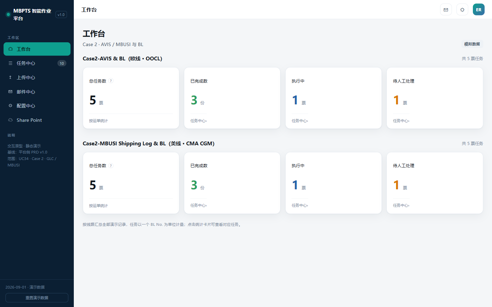
页面操作说明
| # | 功能点 | 功能描述&操作说明 |
|---|---|---|
| 1 | 统计卡 ×4/线路 | 总任务数/已完成/执行中/待人工处理,以 BL No. 为票粒度;点击带参跳任务中心(from=workbench&mode=&status=) |
| 2 | 侧栏导航 | 工作台→任务中心→上传中心→邮件中心→配置中心→Share Point;任务中心徽标=当前任务数 |
| 3 | 顶栏 | 提醒铃铛(未读红点)、主题切换、用户头像 |
页面显示字段说明
| 字段 | 类型 | 必填 | 可编辑 | 填写方式 | 备注 |
|---|---|---|---|---|---|
| 线路分组 | 文本 | — | 否 | 系统生成 | GLC 欧线·OOCL / MBUSI 美线·CMA CGM |
| 统计数值 | 数字 | — | 否 | 系统汇总 | 实时统计 |
页面名称:任务中心 | 用户角色:全部角色(操作按角色控制)
功能说明:两线任务的统一列表,任务=业务单据(票粒度),状态取最新 Run。
功能原型图
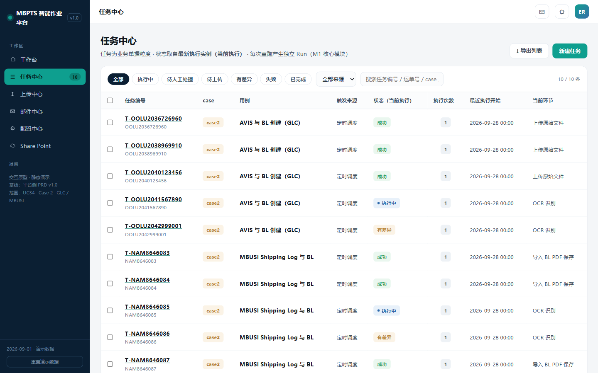
页面操作说明
| # | 功能点 | 功能描述&操作说明 |
|---|---|---|
| 1 | 状态筛选 chip | 全部/执行中/待人工处理/待上传/有差异/失败/已完成 |
| 2 | 来源筛选 | 定时调度/手动创建/手动触发 |
| 3 | 搜索 | 按任务编号/BL No. 检索 |
| 4 | 导出列表 | CSV 导出(仅 MANAGER) |
| 5 | 新建任务 | 选择线路(GLC/MBUSI),手动建票 |
| 6 | 批量重跑 | 勾选后批量生成 R#N+1;执行中任务自动跳过 |
| 7 | 行点击 | 进入任务详情 |
页面显示字段说明
| 字段 | 类型 | 必填 | 可编辑 | 填写方式 | 备注 |
|---|---|---|---|---|---|
| 任务编号 | 文本 | — | 否 | 系统生成(T-BL号) | 含 BL No. |
| case / 用例 | 文本 | — | 否 | 系统生成 | AVIS 与 BL 创建(GLC)/ MBUSI Shipping Log 与 BL |
| 触发来源 | 枚举 | — | 否 | 系统生成 | 定时调度/手动创建/手动触发 |
| 状态(当前执行) | 枚举 | — | 否 | 最新 Run 状态 | 见 8.1 状态机 |
| 执行次数 | 数字 | — | 否 | Run 数量 | |
| 最近执行开始 | 时间 | — | 否 | 系统记录 | |
| 当前环节 | 文本 | — | 否 | 当前节点名 |
页面名称:任务详情 | 用户角色:全部角色(修正/重跑按角色控制)
功能说明:单票全生命周期视图:Run 切换、节点轨迹、识别字段核对与修正、PDF 原文定位、证据预览、重跑。严格区分 Task(单据)与 Run(执行实例)。
功能原型图
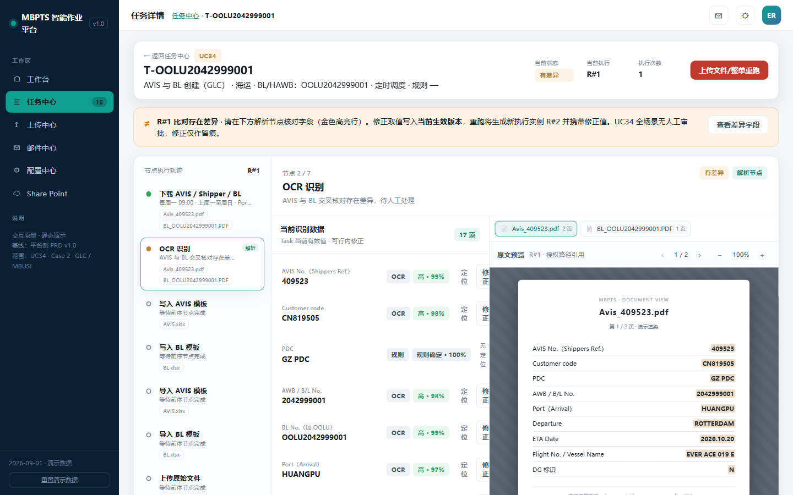
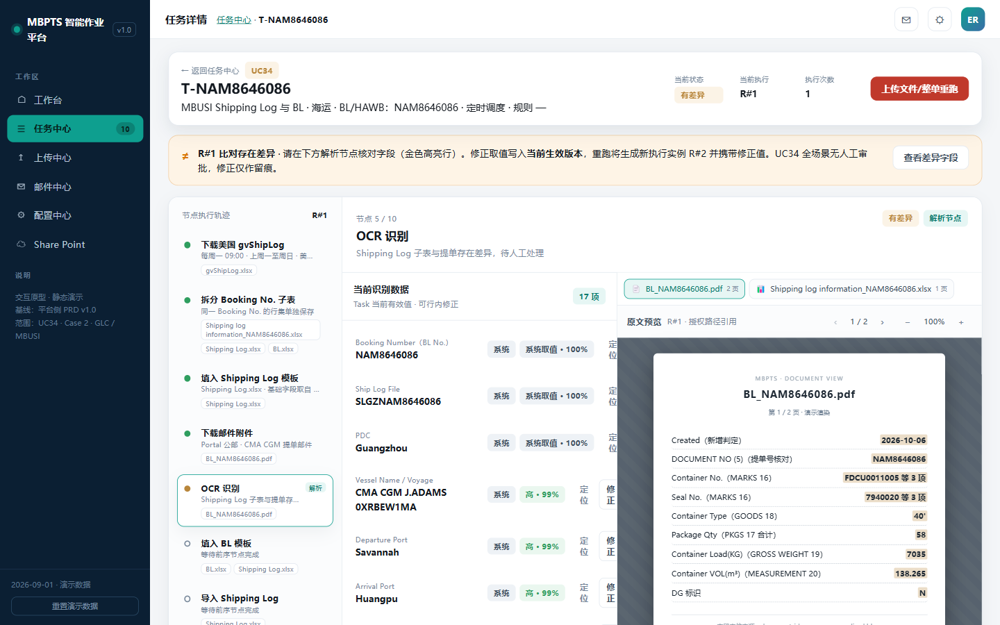
页面操作说明
| # | 功能点 | 功能描述&操作说明 |
|---|---|---|
| 1 | 头部操作 | 失败时「整单重跑」;有差异时「上传文件/整单重跑」 |
| 2 | 三层横幅 | 待上传缺件(列缺失角色)/ R#N 有差异(可定位差异字段)/ R#N 失败 |
| 3 | Run 切换 | R#1、R#2…历史只读;当前生效版本可操作 |
| 4 | 节点轨迹 | 左轨节点列表(GLC 7 / MBUSI 10 节点)+ 右侧工作区 |
| 5 | 当前识别数据 | 字段名/值/来源/置信度/质量等级;低置信金色高亮;行内修正留痕(修正仅留痕,写入当前生效版本) |
| 6 | PDF 原文定位 | 字段行「定位」→ 原文预览跳对应页;预览支持翻页/缩放 |
| 7 | 步骤证据 | email/ocr/screen/table/file 五类,内联预览,WORM 标注 |
| 8 | 触发历史 | 同 Case 兄弟任务、15 天热力图、成功率、平均耗时 |
| 9 | 操作日志 | 任务级全操作留痕 |
节点编排:
页面显示字段说明(当前识别数据区)
| 字段 | 类型 | 必填 | 可编辑 | 填写方式 | 备注 |
|---|---|---|---|---|---|
| 字段名 | 文本 | — | 否 | OCR Schema | 如 AVIS No.、Customer code、PDC、AWB/B/L No.、ETA |
| 当前有效值 | 文本 | 是 | 是(OPERATOR) | OCR/规则+人工修正 | 修正留痕 |
| 来源 | 枚举 | — | 否 | 系统 | OCR / 规则 |
| 置信度 | 百分比 | — | 否 | 模型输出 | 低置信高亮 |
| 质量等级 | 枚举 | — | 否 | 系统判定 | 高/中/低 |
| 原文定位 | 操作 | — | — | 页码+坐标 | 跳原文预览 |
页面名称:邮件中心 / 规则编辑器 | 用户角色:ADMIN(其他角色只读)
功能说明:管理四条监听规则与邮件模板;编辑器三段式配置 + dry-run 试运行。
功能原型图
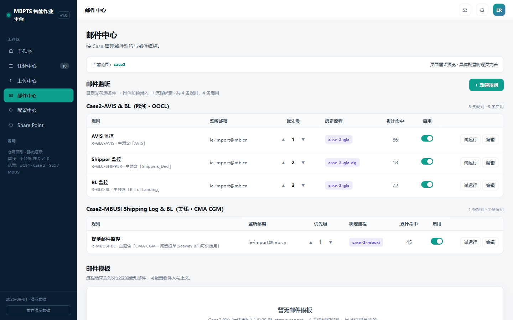
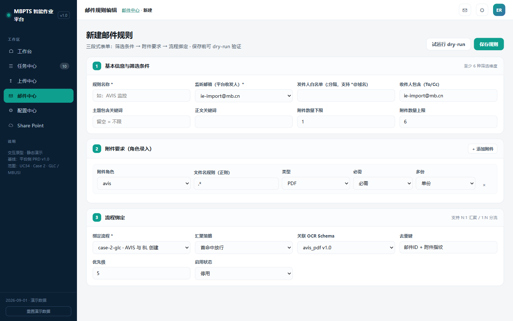
页面操作说明
| # | 功能点 | 功能描述&操作说明 |
|---|---|---|
| 1 | 规则列表 | 按线路分组:规则、监听邮箱、优先级、绑定流程、累计命中、启用开关 |
| 2 | 新建/编辑 | 进入规则编辑器 |
| 3 | 试运行 dry-run | 对样本邮件真实匹配,展示命中/未命中原因,不产生任务 |
| 4 | 邮件模板区 | Case 2 空态(结果回写大表,不发通知邮件) |
| 5 | 筛选条件段 | 规则名、监听邮箱、发件人白名单(*@域名)、To/Cc、主题/正文关键词、附件数量上下限 |
| 6 | 附件要求段 | 角色(avis/shipper_decl/bl/shipping_log)+ 文件名正则 + 类型 + 必需/多份 |
| 7 | 流程绑定段 | case-2-glc / case-2-glc-dg / case-2-mbusi、汇聚策略、OCR Schema、去重键、优先级、启停 |
预置规则:R-GLC-AVIS(主题 AVIS)、R-GLC-SHIPPER(Shippers_Decl,发件人 mbox-006-gsp-lsa-vds2@mercedes-benz.com,DG 判定)、R-GLC-BL(Bill of Landing)、R-MBUSI-BL(CMA CGM Seaway Bill,发件人 website-noreply@cma-cgm.com)。
页面显示字段说明(规则编辑器)
| 字段 | 类型 | 必填 | 可编辑 | 填写方式 | 备注 |
|---|---|---|---|---|---|
| 规则名 | 文本 | 是 | 是 | 手输 | |
| 监听邮箱 | 邮箱 | 是 | 是 | 选择 | 如 ie-import@mb.cn |
| 发件人白名单 | 文本 | 否 | 是 | 手输 | 支持 *@域名 |
| 主题关键词 | 文本 | 是 | 是 | 手输 | 如 AVIS |
| 附件数量区间 | 数字×2 | 否 | 是 | 手输 | min~max |
| 附件角色 | 列表 | 是 | 是 | 逐条录入 | 角色+正则+必需+多份 |
| 绑定流程 | 枚举 | 是 | 是 | 选择 | 3 个流程 |
| 去重键 | 文本 | 是 | 是 | 手输 | 默认 BL 号 |
| 优先级 | 数字 | 是 | 是 | 手输 | 多规则命中时裁决 |
| 启用 | 开关 | — | 是 | 点击 |
页面名称:配置中心 | 用户角色:ADMIN
功能说明:导入模板与对应表的版本化管理;调度配置;共享盘监听(平台预留,Case 2 置灰)。
功能原型图
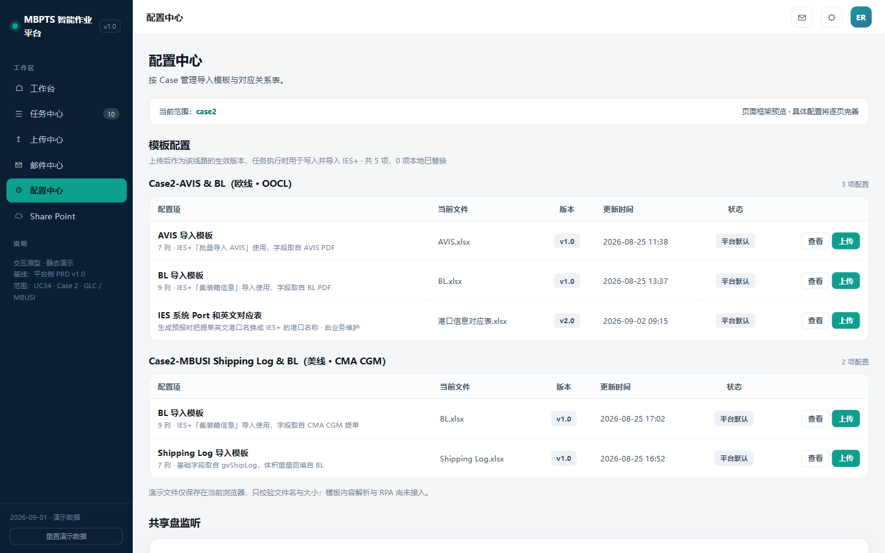
页面操作说明
| # | 功能点 | 功能描述&操作说明 |
|---|---|---|
| 1 | 模板配置 | 按线路分组;查看/上传(扩展名 + ≤20MB 校验,版本+1) |
| 2 | 对应表维护 | PDC-Customer Code、IES Port 对应表在线维护,即时生效 |
| 3 | 调度配置 | 每周一 09:00,可修改 |
| 4 | 共享盘监听 | Case 2 走邮件监听,字段留空置灰(平台能力预留) |
配置项清单:AVIS 导入模板(7 列)、BL 导入模板(9 列,GLC/MBUSI 各一)、Shipping Log 导入模板(7 列)、IES Port 对应表、PDC-Customer Code 对应表。
页面显示字段说明
| 字段 | 类型 | 必填 | 可编辑 | 填写方式 | 备注 |
|---|---|---|---|---|---|
| 配置项 | 文本 | — | 否 | 系统预置 | |
| 当前文件 | 文件 | 是 | 是 | 上传 | 扩展名校验 |
| 版本 | 数字 | — | 否 | 自动 +1 | 历史可查 |
| 更新时间 | 时间 | — | 否 | 系统记录 | |
| 状态 | 枚举 | — | 否 | 系统判定 | 生效/历史 |
页面名称:Share Point | 用户角色:全部角色
功能说明:过程文件归档的只读浏览与取证入口。
功能原型图
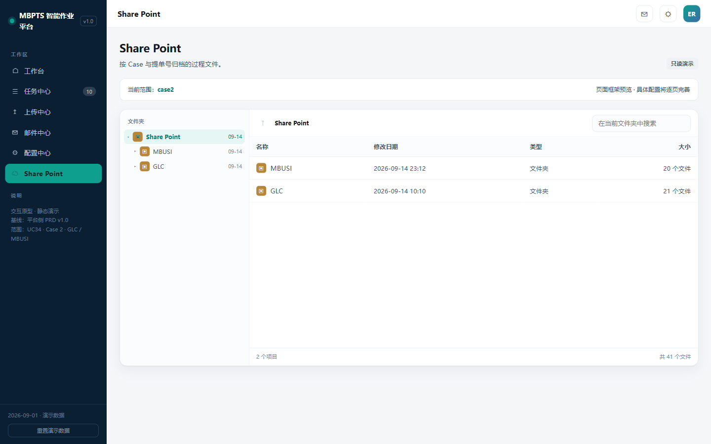
页面操作说明
| # | 功能点 | 功能描述&操作说明 |
|---|---|---|
| 1 | 目录树 | 层级:<归档根>\<PDC>\<GLC|MBUSI>\<运行周>\<票文件夹> |
| 2 | 文件列表 | 名称/修改日期/类型/大小;面包屑;目录内搜索 |
| 3 | 文件抽屉 | 元信息 + 下载/复制路径 |
备注:归档根默认 SharePoint,可配置 T 盘过渡(Q4);票文件夹命名与内容清单见 R2 与 7.2。
| 页面 | 截图 | 本 Case 使用方式 |
|---|---|---|
| 提醒中心 | 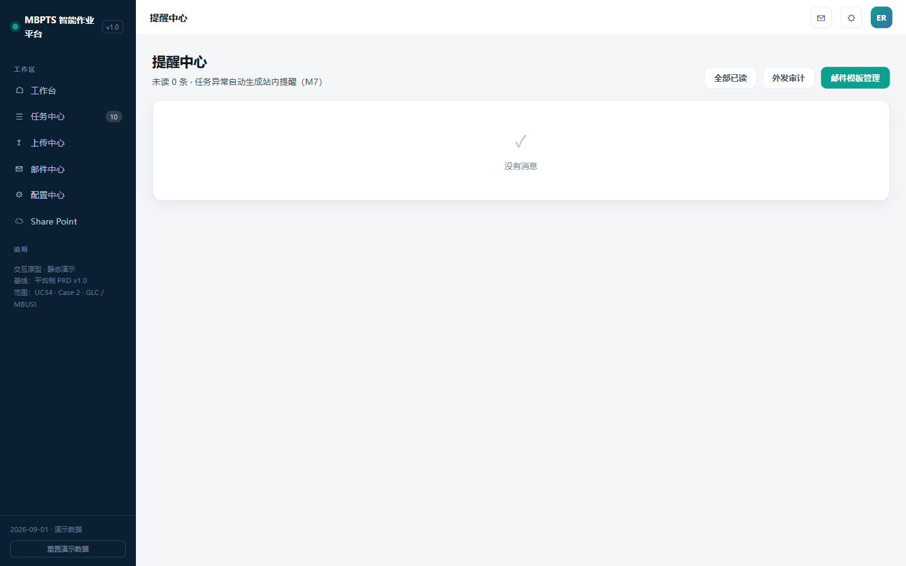 |
任务成功/异常自动生成站内提醒,点击跳任务详情;未读红点;Case 2 不外发邮件 |
| 治理运营台 | 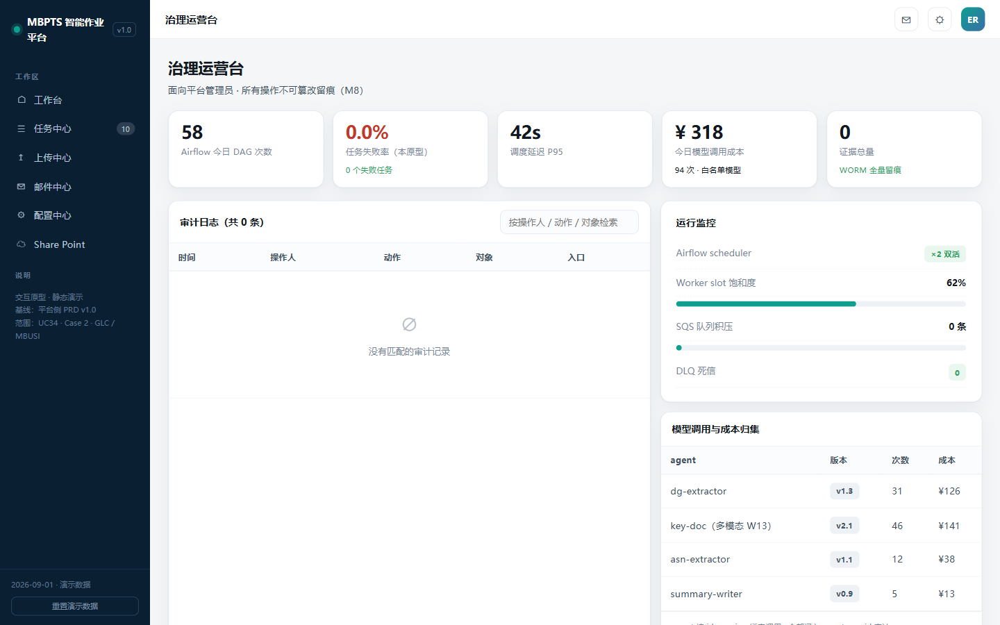 |
DAG 监控、审计日志、模型调用成本、证据总量(WORM) |
| 权限中心 | 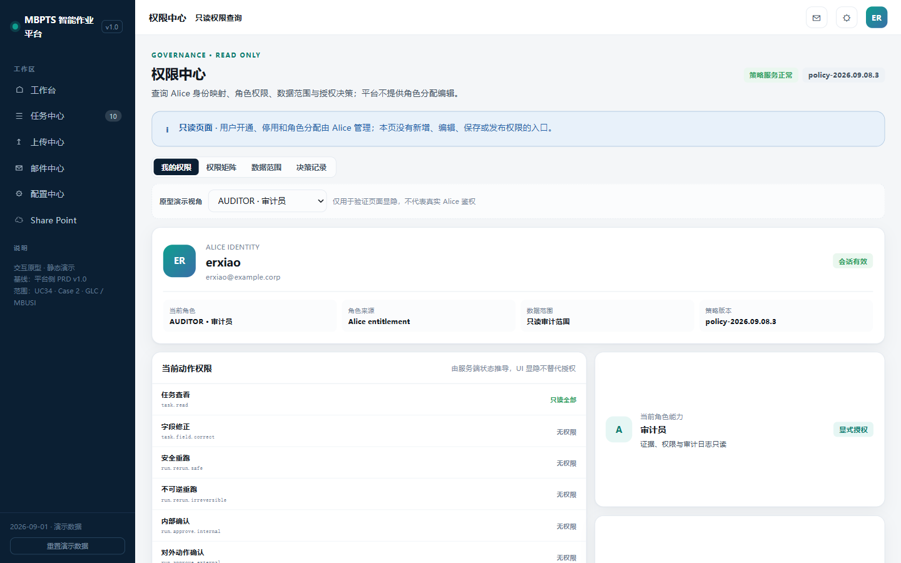 |
四角色只读查询;身份与授权由 Alice 管理 |
| 上传中心 | 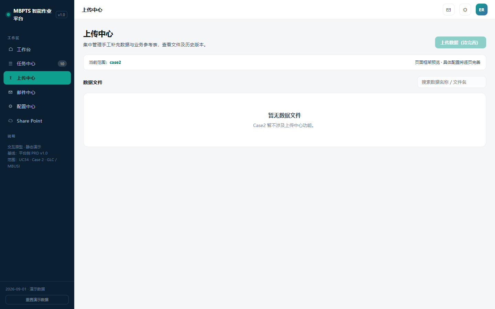 |
Case 2 空态("暂不涉及"),按钮 disabled,平台能力预留 |
| 实体 | 说明 | 关键字段 |
|---|---|---|
| MailRule 邮件规则 | 监听规则 | id、线路、监听邮箱、发件人白名单、主题/正文关键词、附件区间、附件角色[]、绑定流程、去重键、优先级、启停 |
| AttachmentLedger 附件台账 | 暂存登记(key=BL号) | BL 号(归一)、角色、文件名、来源邮件、接收时间、状态(pending/processed)、版本 |
| StagingFile 暂存文件 | 暂存库引用 | BL 号、类型、路径、hash |
| Task 任务 | 业务单据(票粒度) | 任务号(T-BL号)、caseId、线路、BL/HAWB、触发来源、当前状态、当前 Run 号 |
| Run 执行实例 | 一次执行(不可变) | Run 号、起因、状态、起止、耗时、携带修正版本 |
| NodeExecution 节点执行 | 节点轨迹 | Run id、节点序号/名称、状态、起止、输出摘要 |
| FieldResult 字段结果 | 识别+修正 | 字段名、原值、来源、置信度、质量等级、修正值/人/时间、原文定位 |
| Evidence 证据 | WORM 留痕 | 类型/子类型、路径、hash、Run/节点关联 |
| ConfigTemplate 模板配置 | 模板/对应表文件 | 配置项、线路、当前文件、版本、状态、列定义 |
| RefTable 对应表 | PDC / IES Port | 类型、键、值、备注、版本 |
| WritebackRecord 回写记录 | 大表双写 | BL 号、列(G/H/J/K/L/M/N/P)、值、时间、结果 |
| Notification 站内提醒 | 成功/异常提醒 | 类型、标题、关联任务、已读 |
| AuditLog 审计日志 | 全操作留痕 | 时间、操作人、动作、对象、入口 |
关系:MailRule 1─n AttachmentLedger;Task 1─n Run 1─n NodeExecution 1─n FieldResult/Evidence;Task n─1 AttachmentLedger(BL 号);Task 1─n WritebackRecord。
状态机:
| 接口 | 方法 | 说明 |
|---|---|---|
| /api/workbench/summary | GET | 工作台统计卡(line) |
| /api/tasks | GET | 任务列表(status/src/keyword/line) |
| /api/tasks | POST | 新建任务(line、blNo、attachments[]) |
| /api/tasks/{id} | GET | 任务详情(含 Runs/节点/字段/证据) |
| /api/tasks/{id}/rerun | POST | 重跑(scope=full/node/batch) |
| /api/runs/{runId}/fields/{fieldId}/correct | POST | 字段修正留痕 |
| /api/runs/{runId}/evidence | GET | 证据列表/预览 |
| /api/tasks/{id}/attachments | POST | 缺件补传(解除 WAIT_INPUT) |
| /api/rules | GET/POST | 规则列表/新建 |
| /api/rules/{id} | PUT | 规则编辑 |
| /api/rules/{id}/toggle | POST | 启停 |
| /api/rules/{id}/dry-run | POST | 试运行(不产生任务) |
| /api/configs | GET | 模板配置查询 |
| /api/configs/{id}/versions | POST | 上传新版本(≤20MB) |
| /api/ref-tables/{type} | GET/PUT | 对应表查询/维护(pdc/ies-port) |
| /api/staging/{blNo} | GET | 暂存与台账查询 |
| /api/staging/{blNo}/resume | POST | 挂起票人工确认续跑 |
| /api/writeback | GET | 回写状态查询(blNo) |
| /api/archive/tree、/api/archive/files | GET | 归档浏览 |
| /api/notifications、/api/notifications/read | GET/POST | 提醒列表/已读 |
| /api/audit | GET | 审计检索 |
| /api/export/tasks.csv | GET | 任务列表导出(MANAGER) |
IES+ 侧能力要求(实现不限定):I1 发票查询(MBZ/BOL);I2 批量导入 AVIS/Shipping Log(绿灯校验);I3 invoice 级导出;I4 发票附件下载/修改(FOB 填 Others);I5 生成预报;I6 集装箱导入 BL 模板(差异弹窗可完整捕获,有差异不生成台账);I7 文档上传(类别含 Other)。
| 错误码 | 含义 |
|---|---|
| E1001 | 规则校验失败(正则/附件角色缺失),阻断保存 |
| E1002 | dry-run 样本邮件不可用 |
| E2001 | 模板上传校验失败(扩展名/>20MB) |
| E2002 | 模板版本与流程不兼容 |
| E3001 | IES 导入差异(弹窗),捕获 → L 列 → 转人工 |
| E3002 | IES 上传失败/超时,支持检查点重试 |
| E4001 | 暂存缺件(不齐套),任务挂起 WAIT_INPUT |
| E4002 | 重复 BL(去重命中),跳过并记录 |
| E4003 | PDC/ETA 缺失,不建不明确文件夹,转人工 |
| E5001 | 权限不足,拒绝 + 审计 |
| E5002 | 大表回写失败,入队重试 + 告警 |
| 类别 | 指标 | 要求 |
|---|---|---|
| 性能 | 周批量时长 | 双线合计 <2 小时(建议值) |
| 性能 | 页面响应 | 首屏 <2s;任务列表万级分页流畅 |
| 可靠性 | 续跑 | 失败票检查点续跑;重跑去重 100%;调度失败告警 |
| 安全 | 凭证 | 安全存储,不出现于日志 |
| 安全 | 权限/审计 | RBAC 四角色;全操作审计;证据 WORM |
| 兼容性 | 浏览器 | Chrome / Edge 主流版本(PC Web) |
| 可配置 | 配置化 | 调度时间、邮箱、路径、重试、等待时间、模板、对应表均不硬编码 |
| 可审计 | 留痕 | 每票保留源文件、输出、时间戳、状态、错误详情 |
| 约束 | 说明 |
|---|---|
| 触发口径 | 每周一 09:00(可配置),数据窗口固定为上周一至周日 |
| 大表双写 | 平台台账为主,必须同步回写 AVIS BL status report 保持业务习惯 |
| 修正无审批 | UC34 全场景修正仅留痕,不设人工审批节点 |
| IES+ 实现 | 交互方式不限定,但绿灯校验与差异弹窗捕获为硬性能力要求 |
| 归档根 | 默认 SharePoint,T 盘为兼容过渡 |
| 假设 | 说明 |
|---|---|
| 公邮接入 | 平台可读取 Portal 公邮(MBUSI 提单邮件由业务配置自动 Forward 至平台公邮) |
| 权限接入 | 美国 Central Warehouse 网站导出权限可用(否则业务下载放指定位置) |
| 大表可写 | AVIS BL status report 具备平台回写通道 |
| 身份体系 | Alice 提供四角色授权与数据范围 |
| 编号 | 风险 | 等级 | 应对 |
|---|---|---|---|
| RSK-1 | BL 与 AVIS 2~3 周时差导致齐套判断错误 | 中 | 跨周按 BL 号归并 + 挂起机制(R3.1/R3.2) |
| RSK-2 | 美表漏数补登不回溯,漏数票滞留 | 中 | 台账 pending + 下轮 created 捕获续跑(R3.3)+ 异常可见 |
| RSK-3 | IES+ 页面/模板变更导致导入失败 | 中 | 模板版本化 + 检查点续跑 + 失败告警 |
| RSK-4 | OCR 识别错误流入 IES | 高 | 置信度分级 + 低置信强制人工修正 + 交叉核对 |
| RSK-5 | 归档根迁移(T 盘→SharePoint)中断 | 低 | 配置切换 + 历史目录保持可读 |
| 编号 | 问题 | 影响 | 状态 |
|---|---|---|---|
| OPEN-1 | 成功指标建议值(≥80% 自动化率等)需业务确认 | 验收口径 | 待业务确认(Q5) |
| OPEN-2 | 邮箱清单、路径、模板版本、字段映射终稿 | 配置初始化 | 供应商待确认项(MBUSI BRD §11) |
| OPEN-3 | 重试/重跑/覆盖/通知规则的批准口径 | 运维规则 | 供应商待确认项 |
| OPEN-4 | 测试账号、权限、样本文件、IES+ 测试环境 | 测试就绪 | 供应商待确认项 |
原型基线目录:C:\MBPTS\case2页面demo\
| 页面 | 原型文件 | 截图 |
|---|---|---|
| 工作台 | index.html | index.png |
| 任务中心 | tasks.html | tasks.png |
| 任务详情 | task-detail.html | task-detail.png、task-detail-mbusi.png |
| 邮件中心 | rules.html | rules.png |
| 规则编辑器 | rule-edit.html | rule-edit.png |
| 配置中心 | config.html | config.png |
| Share Point | sharepoint.html | sharepoint.png |
| 提醒中心 | notify.html | notify.png |
| 上传中心(空态) | dim-tables.html | dim-tables.png |
| 权限中心 | rbac.html | rbac.png |
| 治理运营台 | govern.html | govern.png |
| 业务流程图 | — | 业务流程图_GLC.png、业务流程图_MBUSI.png、drawio 源文件 |
| 文档 | 说明 |
|---|---|
【MBPTS-UC34】case 2:AVIS_BL_Automation_BRD_0920.docx/.md |
GLC 欧线 BRD(原始逐步截图流程) |
【MBPTS-UC34】case 2:MBUSI_Shipping_Log_BL_Automation_BRD_0920.docx |
MBUSI 正式 BRD(BRD-MBUSI-BL-002 V3):BR-01 |
【MBPTS-UC34】Case 2:GLC&MBUSI梳理.docx |
双线操作梳理(自用版) |
【UC34-Case2】GLC_MBUSI_业务流程图_20260927.html |
业务侧流程图(含 2026-09-27 设计确认点) |
| 需求澄清文档 | Q1~Q14 澄清记录 |
| 设计说明书 | Stage 2 设计全文 |
文档版本:V1.0.0 | 编写日期:2026-09-28 | 审核人:待审核